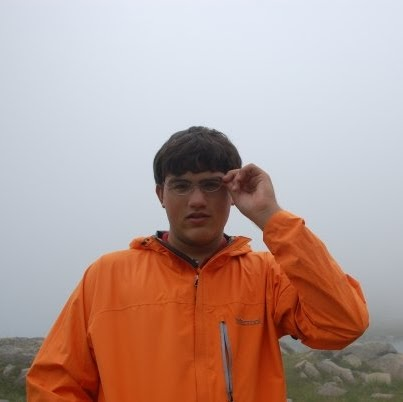
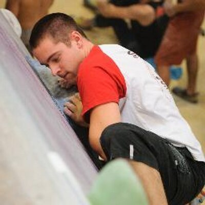

Since 2011, the New York, Boston and Philadelphia Scala meetups have come together every year to host a community driven, Scala conference. The conference rotates between each city, and this year it's in New York City.
Many of our past speakers have been contributors to Typelevel projects. In fact some Typelevel projects began at past Northeast Scala Symposiums! Last year Typelevel colocated their Typelevel Summit along with our conference in Philadelphia, and we're happy to say that it will happen again this year! And to make things simpler, you will only have to purchase one ticket for entrance to both events.
Schedule
March 23rd: Typelevel Summit
March 24th: Northeast Scala Symposium
We're extremely excited to announce the list of speakers below!
| 8:15 | Registration & Breakfast - Pastries / Fruit / Yogurt / Coffee | |
| 9:10 | Opening Remarks | |
| 9:15 |

video |
Free as in Monads
Daniel Spiewak In this talk, we will embark on an epic journey through a live editor buffer as we derive the Free monad from scratch for fun and profit in just a few dozen lines of code. And once we have it, we will see how easy to use and powerful it can be when applied to the right problems. More |
| 10:00 | Break | |
| 10:10 |

|
Monad Transformers: Scala, stop Eff'ing around!
Sukant Hajra Stop chasing Eff'ing Free Cakes with classy optics for a moment, and smell the monad transformers. All you wanted was an FP solution to dependency injection and error handling, right? Let's see how far we can get with monad transformers before leaping to the next thing. You may need nothing more. More |
| 10:55 | Break | |
| 11:15 |

|
Don’t Cheat the Executor -- Execution Contexts in Scala
Scott Underwood Execution Contexts provide the means to execute program logic asynchronously, and are a prerequisite for using Futures and Promises. This talk will explore common mistakes in using Execution Contexts, and strategies for configuring, debugging and monitoring them and their underlying thread pools. More |
| 11:45 | Break | |
| 11:55 |
Polyglot Deployments on Kubernetes with giphykube
Randy Shepherd Scala is a leading choice for building microservices. However, tools like ConductR are useful if you have a pure Scala ecosystem. How is service orchestration done in a polyglot environment? How can one write and test code for these systems without pain? 'giphykube' solves both these problems. More |
|
| 12:10 |
Property-based Testing with ScalaCheck by Example
Kevin Meredith This talk discusses and demos property-based testing. After providing a high-level overview of what it is and its benefits, the talk will demo the application of ScalaCheck on a simple data structure. More |
|
| 12:25 | Lunch - Steak / Chicken / Salmon / Salad / Pasta | |
| 13:40 |

|
Can a DSL be Human?
Katrin Shechtman They say DSLs are a powerful Scala feature. They say it's surprisingly easy to create DSLs in Scala. Aye, but can DSL by human? Can we use Scala to create a statically typed human interaction? What are Scala limits of supporting any kind of domain? Talk with no type theory concepts, but with a twist More |
| 14:25 | Break | |
| 14:35 |

|
Adjunctions in Everyday Life
Rúnar Bjarnason This talk introduces adjunctions, a category theory concept underlying and unifying monads, products, coproducts, algebraic data types, and folds. More |
| 15:20 | Break | |
| 15:40 |  |
Using Recursive Typeclasses to Model your Data
Thurston Sandberg Combine implicits, typeclasses, and the Shapeless library's HList to create a powerful data model for anything that can be mapped to case classes. Recursive typeclasses can describe behavior such as SQL statements and json serialization/deserialization with minimal boilerplate and a succinct syntax. More |
| 16:10 | Break | |
| 16:20 |
Hope, Faith, and Proof in Programming
Bill Venners This talk will show how to apply hope, faith, and proof to write the best code you can. It will compare and contrast the three, then pick a winner. Along the way, this talk will look at types and tests from a new angle and highlight a new kind of assertion that deserves a place in your toolbox. More |
|
| 16:50 | Break | |
| 17:00 |

|
Arrested Developers: What the Scala Compiler & Lucille Bluth Have In Common
Fiona Condon Scala is an elegant and expressive language--so why are its compilation errors so imperious and opaque? I'll talk about my experience transitioning to Scala development from PHP and make a case for a compiler that helps programmers discover the language (with the help of lots of Lucille Bluth gifs). More |
| 17:15 |  |
GraphQL: From Zero to Scala
Jérémie Astori APIs are great! But what if your APIs were coming with a type system? What if your APIs were so predictable that versioning them was history? What if consumers of your APIs could get exactly what they want at every request? Let's discover GraphQL and its implementation in Scala: Sangria. More |
| 17:30 | Closing Remarks | |
| 17:45 | After party at the venue hosted by Meetup | |
March 25th: Unconference
The unconference will be at the
NYU Courant Institute of Mathematical Sciences
, which you can get to via the F-Train at the West 4th Street - Washington Square stop. It starts at 9am, with the first session beginning at 9:30am.
Unfortunately it will not be catered, so eat your breakfast beforehand. We will provide a list of places to get lunch by Saturday.
We have 6 rooms: 1 auditorium, 2 classrooms, and three conference rooms. The auditorium and classrooms have a wide variety of display adapters, and the three conference rooms require a VGA adapter.
How it works: show up and take a look at our Google Sheet which will have rooms along the top row and times along the first column. If you have a talk you want to give, or a topic you'd like to discuss, pick a slot on the sheet, write a short blurb and then show up to that room at that time. This is meant to be very informal, and people are allowed to float around in and out of rooms while they are in session. Take a look at last year's sheet to get a more conrete idea
Tickets
Tickets will go on sale January 19th at 12pm EST at ti.to Make sure you're at your computer, because they go fast!
Call for Speakers
The Northeast Scala Symposium call for speakers is officially open we need you to participate. The speakers will be chosen by you but we need you to speak up first! Each speaker's proposed talk will be voted on by everyone who buys a ticket, and the talks with the most votes will be the ones you see!
Typelevel's call for speakers is already underway and ends January 23rd. Typelevel has a committee that selects speakers, and the speakers they choose will all speak on March 23rd.
This year we will be accepting proposals through PaperCall. Submit your proposal here. We will be closing this submission on Feb, 26. Afterwards, we will be open up the community poll.
Need inspiration? See what others voted for in recent years.
Location
Just a heads up on the location: the Google Street View makes the place look like a dump. The image is from several years ago and has since been renovated and it's much nicer now. Bing has a much better view (thanks @derekmorr)
The conference will be in the Dumbo neighborhood of Brooklyn, NY at 26 Bridge, whose address is unsurprisingly:
26 Bridge St.
Brooklyn, NY 11201
It's just a short, five minute walk from the York St. F-train stop, which is one stop outside of Manhattan. If you are unfamiliar with Dumbo, it's right across the Brooklyn Bridge from Manhattan's Financial District. It's very safe and very trendy. You ought to check out the neighborhood while you're there.
Where to stay
There is a Marriott not far from the venue. Aside from that there aren't any other hotels in the neighborhood, but it's only a five minute walk from the York St. F-train subway stop, so our advice is to find a hotel not far from an F-Train stop so you can take it to the venue. The High St. A and C train stop isn't far from the venue either, so staying near one of those trains, or somewhere in the Financial District in lower Manhattan would be a good option. That said, the walk to the venue from the High St. stop is a bit confusing. If you choose this option, make sure your phone is fully charged so you can use Google Maps to find the venue. And honestly Google Maps won't steer you wrong, so if you're comfortable riding the subway, you can stay just about anywhere. Taxis and Uber are obviously an option to get to and from the venue too.
If you're looking to save a little bit of money, you may be able to find a better deal on Airbnb in Dumbo or a nearby neighborhood. Dumbo and the neighborhoods around Dumbo are safe. Randy and Dustin both live not far from Dumbo, so if you've found an Airbnb you want a sanity check on, please feel free to contact us and we'll be happy to take a look for you.
Sponsorship Packages
If you are interested in sponsoring the Typelevel Summit and Northeast Scala Symposium, please look at our sponsorship packages and contact dustin.whitney@gmail.com
Higher Kindliness
Nobody likes a jerk. Show respect for those around you.
NE Scala is dedicated to providing a harassment-free experience for everyone, regardless of gender, gender identity and expression, sexual orientation, disability, physical appearance, body size, race, or religion (or lack thereof). We do not tolerate harassment of participants in any form. All communication should be appropriate for a technical audience, including people of many different backgrounds. Sexual language, innuendo, and imagery is not appropriate for any symposium venue, including talks.
Participants violating these rules may be asked to leave without a refund, at the sole discretion of the organizers.
Since this is a gathering of static typists, offenders will be caught at compile time.